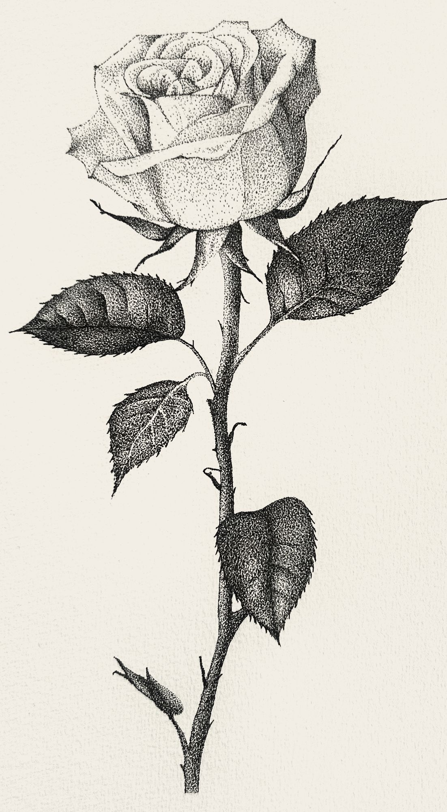
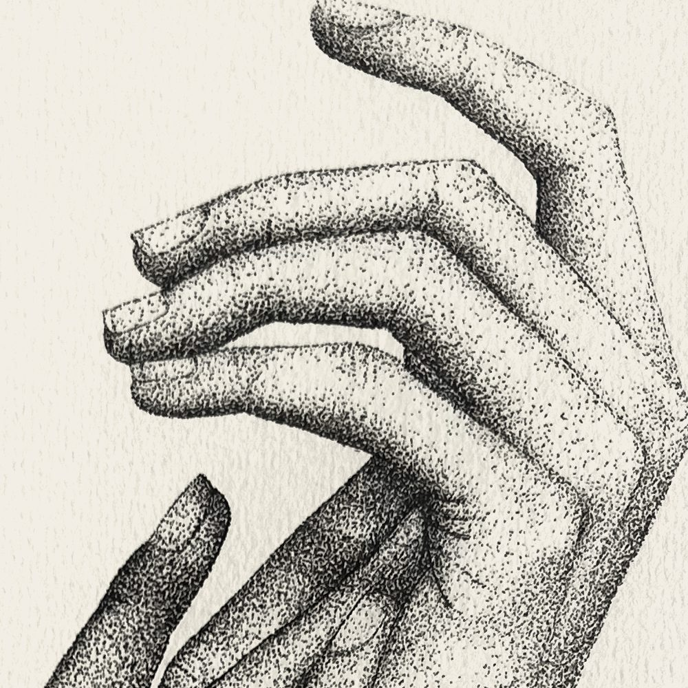

Silk squares
Silk twill printed from selected original drawings, finished with a hand-rolled hem. Each design is intended for a small, numbered edition.
Move across the drawing to see the dots.Tap the drawing to see it full size.
Sarah Lauren
A collection of original drawings exploring portraiture, gesture and the quiet language of the human form.
Move through the works, then select an image to explore the detail.
The Hidden Face explores the moments when a face becomes partially concealed: a woman looking through her fingers, eyes closed in profile, hands meeting in a quiet gesture.
Working entirely in archival ink on cotton paper, Sarah Lauren builds each image from thousands of individual points. Tonal depth emerges through the density and placement of each mark. A shadow is simply more dots, set closer together.
From a distance, the drawings hold the softness and presence of a photograph. Up close, the image resolves into an intricate field of individual marks, each placed by hand. The work rewards a slower kind of looking.
Original drawings, individually made by hand. Enquiries about availability and pricing are welcome.

Selected drawings, reimagined as collectible objects.

A series of editions is in development, extending the original drawings into printed works and textiles.
Silk twill printed from selected original drawings, finished with a hand-rolled hem. Each design is intended for a small, numbered edition.
Giclée prints on cotton rag, planned for production in Aotearoa. Each print will be signed and numbered by hand.
Original artwork. Distinctive applications. Considered collaborations.
Working with private collectors and creative brands across fashion, beauty, fragrance and interiors.
The practice extends beyond the original drawing into portrait commissions, artwork licensing, packaging, editorial imagery and limited-edition objects. Each collaboration begins with an individual artistic perspective, developed through drawing.


The art of looking closer.
Illustration by Sarah Lauren
These images are independent studio studies, created to explore potential applications of the artwork. They are not commissioned projects or existing brand collaborations.
For private commissions, artwork licensing, editorial enquiries and creative collaborations, get in touch.
Thousands of marks. Placed one at a time.
Each drawing begins with a faint pencil outline. Form and tonal depth are developed gradually, using individual points of pigment ink.


Sarah Lauren is an artist working in black ink, exploring portraiture, gesture and botanical forms through meticulous stippled drawing.
With a background in fashion design, she brings an attention to line, proportion, texture and material to her practice.
Based in Tairāwhiti, on the east coast of Aotearoa New Zealand, her work centres on original drawings and their potential to extend into textiles, editions and creative collaborations.
Setup needed: add your contact email in js/data.js. Enquiry links stay switched off until then, and this notice disappears.